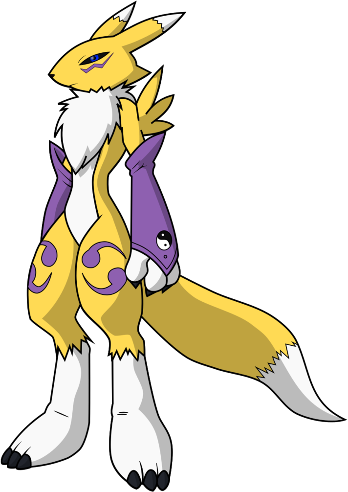

Renamon rebuilt as a code-only procedural THREE.Group factory
(src/createRenamonModel.ts) via the
img2threejs
pipeline: image probe → pre-spec assessment → detail inventory → sculpt spec
(strict-quality ✅) → staged factory generation.
Identity details: tall ears with white tips, narrow snout, blue eyes, purple facial marking, white chest ruff, baggy purple sleeves (yin-yang emblem), spiral thigh markings, digitigrade white feet with dark claws, long tail with white tip.